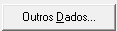

ECF
A Escrituração Contábil Fiscal (ECF) é uma obrigação acessória imposta pela Receita Federal do Brasil que substituiu a Declaração de Informações Econômico-Fiscais da Pessoa Jurídica (DIPJ) desde o ano-calendário de 2014. Ela faz parte do Sistema Público de Escrituração Digital (SPED) e tem como objetivo aprimorar a fiscalização tributária, permitindo o cruzamento de dados fornecidos pelas empresas com outras declarações, como a Escrituração Contábil Digital (ECD).
Quem deve entregar a ECF?
Todas as pessoas jurídicas, incluindo as imunes e isentas, devem preencher e transmitir a ECF, independentemente do regime tributário adotado (Lucro Real, Lucro Presumido ou Lucro Arbitrado), exceto:
- - Empresas optantes pelo Simples Nacional;
- - Órgãos públicos, autarquias e fundações públicas;
- - Pessoas jurídicas inativas, que não realizaram nenhuma atividade operacional, patrimonial ou financeira durante todo o ano-calendário.
Prazo de entrega
A ECF deve ser enviada anualmente, até o último dia útil do mês de julho do ano seguinte ao período da escrituração. O não cumprimento do prazo pode resultar em multas.
GERAÇÃO DO ARQUIVO SPED_DIARIO00000.txt
"Agora, acesse Relatórios/Informativos/SPED ECF Contábil ou utilize o atalho 'Alt+R+F+E' para agilizar o processo."
CONFIGURACAO DO ARQUIVO
A seguinte tela será exibida. Nela, acesse 'Outros Dados' para prosseguir 
Selecione as opções conforme exibido na tela abaixo.
DEPARA DAS INFORMACOES FISCAIS IMPORTADAS E DISTRIBUIÇÃO DE LUCROS
É essencial importar todos os períodos dos impostos IRPJ e CSLL de cada trimestre e validar as informações junto ao departamento Fiscal. Além disso, em Informações gerais/Y600 - Identificação e Remuneração, deve-se registrar os dados de distribuição de lucros no exercício, assegurando precisão e conformidade.
Feito todos os preechimentos basta salvar o arquivo em uma pesta de preferencia organizada dentro da pasta da empresa, renomeie para 2024-2025 ano exercício e ano calendário.
Agora passamos para a etapa de validação do arquivo no programa SPED ECF, garantindo que todas as informações estejam corretas e em conformidade com as exigências fiscais
PROGRAMA SPED FISCAL
Abrindo o programa a tela abaixo será exbida.
IMPORTAÇÃO DO ARQUIVO
Vamos fazer a importação do arquivo que acabamos de criar para o SPED fiscal.
Exibirá a tela de importação dos blocos apenas confirmer em
Clique em Ok ou confirme as demais mensagens.
RELATORIO DE PENDENCIAS
Caso aparecam pendeicas devem ser verificadas e resolvidas.
RECUPERAÇÃO DA ECD
Antes de validar a ECF é preciso recuperar a ECD que nada mais é que o arquivo gerado pelo programa validador da ECD, muito cuidado para não confundir com o gerado pelo sistema contábil, o arquivo será exibido já no programa da ECF.
VALIDACAO ECF
Vamos validar a ECF
Clique na na validação, caso ocorram erros os mesmos terão que ser resolvidos para entrega é possivel editar o arquivo dentro proprio programa SPED.
GERAR ARQUIVO PARA ENTREGA
Vamos gerar o arquivo salvando na pasta da ecf e renomeado com o exercicio e ano de entrga exemplo: 2024-2025.
Assintaturas
Estamos na reta final, as assinaturas são bem intuitivas porém é necessário ter o certificado da empresa ou do procurador instalado na máquina.
IMPORTANTE
Antes de transmitir lembra que deixando a transmissão da ECD em standby? agora sim vamos transmitir ambas em sequencia, vamos realizar as transmissões por aqui.
SALVANDO O RECIBO DA ECD
Clique duas vezes para abrir o recibo, salve o arquivo utilizando o formato sugerido "RECIBO ECD XXXX-XXXX", certifique-se de armazená-lo na pasta correspondente à ECD, visualize o recibo e, em seguida, baixe-o para garantir o registro adequado
TRANSMISSÃO DA ECF
Agora vamos transmitir a ECF na ECF não vamos salvar apenas o Recibo existe um outro relatório a ser salvo
Tela de transmissão, clique em ok para prosseguir
RELATÓRIO DE IMPRESSÃO
Sia esse caminho para svisualidar o "Relatório de de Impressões de Pastas e Fichas"
Marque todas as opções e clique em visualizar
Baixae o documento, essa etapa é muito importante pois esse relatório poderá se necessáro futuramente.
E assim encerramos com as entregas dos SPED ECD e ECF.